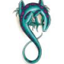

Forums galactiques > Assemblée Galactique : diplomatie officielle > Dîme (ne payez pas, lisez ceci avant)
Pages : 1
| Babar Respect diplomatique : 347  24/01 ETU 20:30 | Score : 9 Détails Avocat babar.
Cher gouvernement, Je viens de lire avec joie votre proposition. Vous voulez l' appliquer à la lettre ? On doit bien en accepter chaque mot ? Vous voulez vraiment l' appliquer mot pour mot ? Ok. Pour que les choses soit claires, je vais relire votre avis d' imposition recu en faisant un copier/coller holographique. Faites de meme cher(e)s Commandant(e)s en relisant aussi cet avis. "Il nous est demandé de verser 10 % de NOTRE stock en leems." En lisant, je lis bien de NOTRE stock de leems. En me mettant à ma place de Commandants (c' est moi qui lis) par NOTRE (vu que cet avis est écrit et rédigé sous votre nom) moi je comprends VOTRE (seul possibilité grammatical possible). Commandants puis je payer 10% de leems de VOTRE stock ? Soit, je me sers donc de votre stock, soit, je dois payer 10% de votre stock (j' ignore à combien il s' élève mais pour ma part, meme 0.01% est impossible. Votre proposition de dime tel que rédigée maintenant est impossible à faire ou alors, vous nous ouvrez vos stocks de leems ... ce que j' attends car malgré ma volonté de le faire, vous, vous ne le ferez pas. Je ne paye donc pas cette dime, je ne suis pas en mesure de le faire tel que selon vos directives. Avec mes respects. Avocat Babar. | ||
| Babar Respect diplomatique : 347 24/01 ETU 20:54 | Score : 5 Détails "Si notre cher Babar savait bien lire ses messages. Il verrait qu'en fait ce message a été adressé par SON peuple qui lui explique la situation."
Effectivement, je commence donc l' euthanasie en masse de mon peuple et son remplacement par des colons pris sur d' autres planètes, pour avoir osé apporter une tel demande sur mon bureau. Ne lisez donc pas mon message ci dessus, seul une partie du titre est juste et toujours d' actualité après relecture et correction. | ||
| Kev Walker Respect diplomatique : 685  24/01 ETU 21:02 | Score : 1 Détails Je vous pardonne mon cher Babar, l'erreur est humaine comme on dit. Vous trouverez mieux la prochaine fois. Je sens dans votre voix un peu d'énervement. Que ce passe-t-il ? Vous allez pas nous dire que vous vous attendiez qu'on fasse une proposition comme le Sénat avec plein de lois et d'articles ? Ah non, j'ai compris, monsieur Babar aurait bien aimé payer un impôt de 1% sur sa production pendant un jour. Ainsi il aurait conservé sa fortune et aurait pu dire : "J'ai payé mon impôt, je reste neutre."
Hélas non, cet impôt de 10% sur la fortune, qui n'est pas si énorme quand on y réfléchit, demande un effort de la part du commandant. Au moins, on vous aura poussé à prendre position et à sortir de votre fausse neutralité, allant même jusqu'à ouvrir un nouveau sujet de discussion pour inciter les commandant à ne pas payer pour une raison qui vous ridiculise. Enfin, libre à vous de ne pas payer, ce n'est pas obligatoire de toute manière. Espérez simplement que personne n'aura à se plaindre de vous. Kev Walker. | ||
| Babar Respect diplomatique : 347 24/01 ETU 21:16 | Score : 1 Détails Pour ma part, je n' ai pas encore pris de décisions cher Kev sur cet "impot".
10% ... mmmm, vous devez avoir beaucoup de projets pour justifier de tel rentes régulières, enfin non, j' oubliais, vous vous passez des justifications, votre présence au gouvernement suffit à elle seule, pour faire passer vos demandes. Soit, je vais beaucoup réfléchir sur votre proposition de dime et étudier toutes les possibilités de m' acquitter de celle ci, au sens propre comme au sens figuré. Vous recevrez ma réponse en temps et en heure, ne vous tracassez pas, je paie toujours et cash ce que je dois rendre à quelqu' un. Pour ne pas oublier cependant, je vous mets en tete des "choses à faire" pour cette fin de mois. Sur ce, je me retire, vous n' etes pas ma seule priorité et encore moins, le centre du monde pour, à ce point monopoliser toute ma soirée. | ||
| Linda Respect diplomatique : 77  25/01 ETU 10:57 | Score : 0 Détails "Linda Arriva à l'assemblée"
Moi même j'ai refuser mon peuple n'accepte aucune dictature et aucune menace! "Linda Repartit" | ||
| Kev Walker Respect diplomatique : 685 25/01 ETU 13:39 | Score : 0 Détails Après suppression de mon message pour je ne sais qu'elle raison, j'enlève la partie qui devait déranger et je le remets. Il doit se situer après la première intervention de Babar. Si certains s'amusent à censurer cela va mal se passer.
"Si notre cher Babar savait bien lire ses messages. Il verrait qu'en fait ce message a été adressé par son peuple qui lui explique la situation. "Nous venons de recevoir un communiqué ". "Il nous est demandé de verser 10 % de notre stock en leems". Que vous refusiez pour d'autres raisons, soit, mais pour celle là, c'est d'une stupidité sans nom. Je suis déçu de voir qu'un homme de droit, qu'un journaliste de votre rang, ne sâche même pas lire. Kev Walker." ~~~~~~~~~~~~~~~~~~~~~~~~~~~~~~~~~~~~~~~~~~~~~~~~~~~~~~~~~~~~ Pour Linda : où avez vous vu que nous menaçons quelqu'un ? | ||
| Babar Respect diplomatique : 347 25/01 ETU 13:41 | Score : 4 Détails Vous auriez tord Linda de ne pas payer, pourquoi se priver de l' aide généreuse de nos amis.
J' ai moi meme après discussions, décidé d' accepter cette main tendue. Tiens pour égayer ce débat et apporter un peu de culture dans un monde si triste, un peu de littérature nous fera le plus grand bien pour nous changer les idées et apporter un peu de détente dans cette assemblée un peu à cran et nerveuse: LE CHENE ET LE ROSEAU (texte tombé dans le domaine plublic depuis des millénaires) (Jean de la Fontaine - (1621-1695) Le Chêne un jour dit au Roseau : (traduction entre les **** par mes soins, le texte n' a pas pu etre déchiffré entierement) *** le chene explique comme le roseau est bien fragile et minable en force et puissance par rapport à un Chene*** Le moindre vent, qui d'aventure Fait rider la face de l'eau, Vous oblige à baisser la tete ***le chene montre sa puissance*** Vous n'auriez pas tant à souffrir : Je vous défendrais de l'orage ; Mais vous naissez le plus souvent Sur les humides bords des Royaumes du vent. La nature envers vous me semble bien injuste. ****le chene offre sa protection humaniste mais le roseau lui réponds**** - Votre compassion, lui répondit l'Arbuste, Part d'un bon naturel ; mais quittez ce souci. Les vents me sont moins qu'à vous redoutables. Je plie mais, ne romps pas. Vous avez jusqu'ici Contre leurs coups épouvantables Résisté sans courber le dos ***le roseau explique que le chene meme si jusque maintenant invincible peut se permettre de regarder de haut, ce minuscule roseau, devrait se méfier car, visiblement des temps obscurs arrivent (un orage et une immense tempete)**** L'Arbre tient bon ; le Roseau plie. Le vent redouble ses efforts, Et fait si bien qu'il déracine Celui de qui la tête au Ciel était voisine Et dont les pieds touchaient à l'Empire des Morts. ***le chene tombe et le roseau qui plie est toujour là*** Voilà qui apporte un peu de gaieté et de culture dans ces sujets de l' Assemblée un peu martial. Méditez sur ce beau texte. Faire travailler ses neurones sur des sujets dits "intellectuel" permet des fois de se dispenser de devoir en faire, sur des sujets plus militaires et inutiles. Cela change un peu, non ? Kev et Thaois se sont fait un point d' hooneur d' éduquer les "blondes". Pour ma part, je vais éduquer tous les Commandants sur la culture et le savoir. Une vaste mission et débat que voilà. Mais je serais à la hauteur de cette tache d' éducation. Elle est primordiale et necessaire dans ces temps bien occultes ...heu ... incultes bien sur. Je ne manquerais pas donc, de vous faire partager mon amour de la littérature de l' ancien monde. | ||
| Sparshong Respect diplomatique : 0  25/01 ETU 22:58 | Score : 0 Détails Je refuse également de payer cette dîme. Cet impôt est excessivement cher pour ce qu'il propose. Pourquoi est-ce que nous n'aurions pas droit à la protection sous prétexte que notre aggresseur a lui aussi payé l'impôt ?
Il me semble que lorsqu'on souscrit à une assurance, celle-ci reste valable même s'il nous arrive un accident avec un autre assuré ! Imaginons que tout le monde par prudence préfère payer cet impôt, le résultat serait donc nul puisqu'il n'y aurait que des conflits inter-payeurs. En revanche tout le monde aurait gentillement été ponctionné de 10% de son budget, peut-être les 10% manquants pour construire les bunkers nécessaires. | ||
| Kev Walker Respect diplomatique : 685 25/01 ETU 23:09 | Score : 2 Détails Votre raisonnement n'est pas mauvais, vous oubliez cependant un détail. Le fait de dire haut et fort que vous êtes un non payeur, fera de vous une cible privilégiée pour les payeurs mais également les non payeurs.
Si vous vous faîtes envahir par un non payeur, nous ne bougerons pas un seul petit doigt (IC, si tu lis ce message ...). Si vous vous avez un problème avec un payeur, alors le gouvernement se réservera le droit d'agir contre vous. Vos petits bunkers et l'argent que vous aurez économisé ainsi ne vous sauveront pas. Alors oui, cet argent représente beaucoup pour vous (10 % de votre stock de leems), mais ce que vous avez à gagner en payant et surtout à perdre en ne payant pas est bien plus important. Beaucoup l'ont compris et même parmi les contestataires. Certains regrettent déjà de ne pas avoir payé et nous supplient d'accepter un paiement par transporteur. (Nous étudions actuellement ce cas.) A vous de bien faire vos choix, en espérant que cela ne soit pas le dernier choix que vous ayez fait. Gouverneur Kev. | ||
| Improved Carnage Respect diplomatique : 131  25/01 ETU 23:21  | Score : 1 Détails j'vous salut commandant kev ,
mouais , moi j'donne pas d'conseil , il est surement pas bon . Enfin bref , j'espere que j'ai d'la chance a pas taper une chochotte qui se cache derriere votre impôt , ca serai domage qu'un jour je vois débarquer tout plein de monde du gang a thaois ... Mais vous inquietez pas commandant kev , un jour viendra ou je serais pret a affronter votre gang . Je suis chagriner de voir le commandant getnaked disparaitre , j'aurai bien voulu me foutre sur la gueule avec lui aussi ... Un jour viendra ou les chochottes n'auront plus peur de vous ... Donc j'invite a tous les commercants radins et bourrer d'pognon , de thunes a acheter de la flotte pour moi et me donner vos ressources pour produire , j'invite tous les alliantistes a me fournir leurs ressources . Je me battrais pour vous comme le fait le commandant kev walker pour thaois . | ||
| Avery Respect diplomatique : 21 25/01 ETU 23:29 | Score : 2 Détails Je tiens à préciser que le commandant IC, ici présent, même s'il est moins puissant que notre gouvernement actuel est probablement pire encore en terme de diplomatie.
Aussi, lui donner de ressources ne ferait que servir sa guerre contre moi en réalité, et vous pourriez toujours courrir pour avoir une quelconque protection vis à vis du gouvernement, qui de toute façons, a amplement de quoi le balayer... | ||
| Improved Carnage Respect diplomatique : 131 25/01 ETU 23:32 | Score : 1 Détails commandant avery , retournez au bac a sable je vous prit , ici c'est pour les grandes personnes qui font la guerre et non des chatouilles . Quand vous commencerez vraiment a etre dangereux je vous prendrais au sérieu , pour le moment je préfere m'occupé d'un super défi .
merci commandant avery pour votre compréhension . | ||
| Thâois Respect diplomatique : 582  25/01 ETU 23:35 | Score : 0 Détails Cher I.C, le Cdt Thâois n'a nul besoin du Noble Cdt Kev Walker pour venir vous boter le train...
Je ne suis pas le mécéne de Kev mais le partenaire de jeu... De plus, l'Armée Naine est suffisament forte pour venir à bout toute seul de n'importe quel Cdt se mettant en travers de sa route et cela sans passer par les escouades de Kamikazes |
Pages : 1
Forums galactiques > Assemblée Galactique : diplomatie officielle > Dîme (ne payez pas, lisez ceci avant)